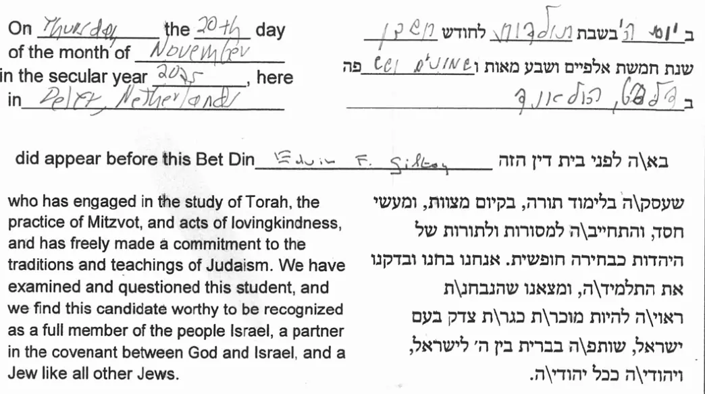

Exhibit · Record
Beit din certificate of conversion to Judaism, 20 November 2025
The passage
“On Thursday the 20th day of the month of November in the secular year 2025, here in Delft, Netherlands did appear before this Bet Din Edwin F. Giltay who has engaged in the study of Torah, the practice of Mitzvot, and acts of lovingkindness, and has freely made a commitment to the traditions and teachings of Judaism. We have examined and questioned this student, and we find this candidate worthy to be recognized as a full member of the people Israel, a partner in the covenant between God and Israel, and a Jew like all other Jews.” Page 1. The words in the blanks, the date (Thursday, 20th, November, 2025), the place (Delft, Netherlands) and the name (Edwin F. Giltay), are handwritten on the printed form. The Hebrew column dates the day in the Jewish calendar as the fifth day of the week of Toledot, in Cheshvan 5786. The extract below shows the declaration, English on the left and Hebrew on the right.
Original wording
“ב יום ה׳ בשבת תולדות לחודש חשון שנת חמשת אלפיים ושבע מאות ושמונים ושש פה ב דלפט, הולנד בא\ה לפני בית דין הזה שעסק\ה בלימוד תורה, בקיום מצוות, ומעשי חסד, והתחייב\ה למסורות ולתורות של היהדות כבחירה חופשית. אנחנו בחנו ובדקנו את התלמיד\ה, ומצאנו שהנבחן\ת ראוי\ה להיות מוכר\ת כגר\ת צדק בעם ישראל, שותפ\ה בברית בין ה׳ לישראל, ויהודי\ה ככל יהודי\ה.” The certificate is a bilingual form: the same declaration is printed in English on the left and in Hebrew on the right. This is the Hebrew column, with the handwritten entries in place. It dates the day in the Jewish calendar as the fifth day of the week of Toledot, in Cheshvan 5786, and the backslashes are the form’s own way of offering a masculine and a feminine ending in one word.

Why this document matters
The author’s biography recounts that Giltay, rather than letting the years of pressure embitter him, deepened his spiritual life and completed a conversion to Judaism in 2025 after three years of study. This certificate confirms that step. Three judges, who were also rabbis, met as a beit din, a rabbinical court. They declared that they had examined and tested him and found him worthy to be recognised as a full member of the people Israel. The document also sets down the name he received among the people Israel, Eliyahu.
Provenance
- Document
- Certificate of Conversion to Judaism (giyur), printed bilingual form
- Court
- Bet Din affiliated with Reconstructing Judaism
- Members
- Rabbi Hannah Nathans (head), Rabbi Rebecca Lillian, Rabbi Michael Zimmerman
- Issued to
- Edwin F. Giltay
- Name among the people Israel
- Eliyahu ben Avraham v’Sarah (אליהו בן אברהם ושרה)
- Congregation
- Klal Jisrael (כלל ישראל)
- President
- Eric Bremer
- Date
- Thursday 20 November 2025 (week of Toledot, Cheshvan 5786)
- Place
- Delft, Netherlands
- Language
- English and Hebrew
Cited in: the author biography.
Exhibit page: https://
Document: https://
Last modified 13 September 2026, accessed 3 October 2026.

This page is an exhibit to the book The Cover-up General by Edwin Giltay and its accompanying website.